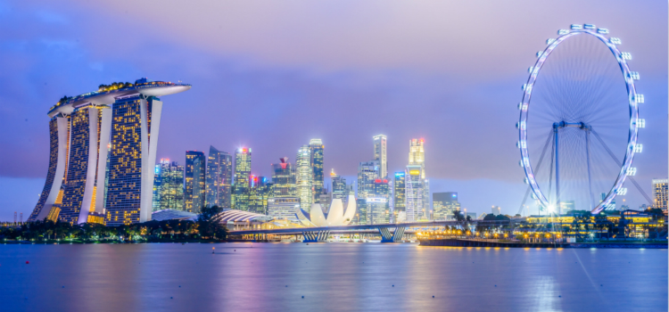
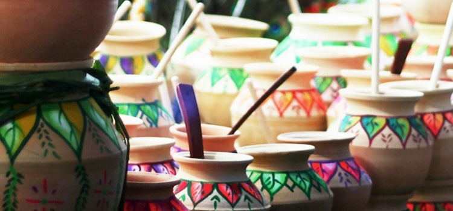

介绍
新加坡共和国（英语：Republic of Singapore；马来语：Republik Singapura），通称新加坡，又有狮城之称。位于马来半岛南端、马六甲海峡出入口，北隔柔佛海峡与马来西亚相邻，南隔新加坡海峡与印度尼西亚相望。由新加坡岛及附近63个小岛组成，其中新加坡岛占全国面积的88.5%。

自1965年走上独立道路之后，新加坡迅速发展并成为亚洲四小龙之一。新加坡是个多元文化种族的移民国家，也是高度国际化的金融、服务和航运中心之一。高楼星罗棋布伴上绿草如茵又干净整洁的街道，故有花园城市之美称。
公众假期及节庆
新加坡是个多民族聚集的国家，当地的节庆也涵盖了中华、回教、印度和基督教等多姿多彩的元素特色。
丰收节 一月
丰收节是印度族群庆祝农作物收成的节日，他们会按照旧时代传统，以缤纷多彩的活动庆祝丰收。新加坡民众在吉庆 Thai 月开始之时庆祝丰收节。丰收节第一天叫做“Bhogi Pongal”，首先敬拜掌管兴云布雨的神因陀罗 (Indra)。这一天，人们会进行春季大扫除，丢弃旧物，以迎接新的开始。点油灯，穿新衣，并在家中的地板上用米粉制作色彩艳丽的图案装饰。第二天叫做 “Surya Pongal”，是供奉太阳神的日子。每个家庭都会煮上一大锅香甜的牛奶米粥，在黎明时分献给太阳神 Surya。Ponga 的意思是“溢出”，因此这锅米粥要煮至沸腾溢出，象征繁荣富足。而后全家人以及来访者一同分食米粥。这一天人们走亲访友，彼此送上祝福和问候。第三天叫做 “Mattu Pongal”，是供奉神牛（牛在兴都教中被视为圣物）的日子。为了感谢神牛的付出，比如在田间辛勤劳作、为人们奉献牛奶，人们会为神牛沐浴，并将牛角涂上艳丽的颜色。人们还会在牛脖子上系上彩珠、铃铛和花环，给他们喂食特制点心。

农历新年 农历正月初一
农历新年前3周，您就能感受到新加坡的大街小巷到处弥漫着浓浓的年味。农历新年的庆祝活动丰富多彩，各式各样，有精彩纷呈的大游行，热闹非凡的季节性市集，还有欢腾动感的舞狮表演，然而最令人兴奋的莫过于欢聚的亲友在一起谈笑风生，相互赠送橘子祝福好运，共享精心烹制的美食。这个节日通常是在1月底或者2月初。许多小商店和食品店在这期间两三天不营业，只有超级市场、百货公司和高档餐馆仍开门营业。农历新年期间上市的各种精选节日美食让人欲拒不能。凤梨酥、味道浓郁的梅子千层（lapis）、香脆的鸡蛋卷 、入口即化的“kueh bangkit”（椰汁糕点）、辣虾卷、肉干等。热闹非凡的集市，浓浓的节日氛围，是新加坡农历新年期间不可错过的景象。别错过牛车水街的亮灯仪式，届时精彩的舞狮和吞火表演将在牛车水广场上隆重举行。街头嘉年华游行是新加坡版的巴西狂欢节，花团锦簇的花车、令人眼花缭乱的杂技、惊险刺激的杂耍、动人的打击乐、火辣的舞蹈，彻底点燃了人们的狂欢热情。春节期间的春到河畔会在滨海湾浮动平台举行，在这个新年大型游园活动上，可以品尝节日美食，观看精彩的戏曲表演，亲自体验中国书法的乐趣，或欣赏展出的巨大手工灯笼。

大宝森节 米尔历的“泰月”（第十个月）满月时（公历的一月或二月）
大宝森节是新加坡兴都教徒们祈福、还愿与感恩的一次年度盛会，它最吸引人的莫过于一年一度的大型缤纷游行。每到一年一度的大宝森节，市中心车水马龙的交通几乎因令人眼花缭乱的游行、人山人海的热闹呼喊，以及欢快敲击的印度鼓，而暂时处于停滞状态。大宝森通常历时两天。大宝森节前夕，载有穆鲁干神像的马车从位于实龙岗路(Serangoon Road) 的斯里尼沙柏鲁马兴都庙(Sri Srinivasa Perumal Temple) 出发，最终到达位于登路(Tank Road) 的丹达乌他帕尼兴都庙(Sri Thendayuthapani Temple)。
从位于实龙岗路的斯里尼瓦沙柏鲁马兴都庙到位于登路的丹达乌他帕尼兴都庙之间，可见到信徒游行的壮观景象，有些路段还因这一盛事而禁止车辆通行。信徒们要徒步走完这4.5公里，亲友们则在一旁吟唱圣歌和祷词，给信徒们以支持和鼓励。
端午节 农历五月初五
龙舟节期间，糯米粽子是最受人们喜爱的一款民间美食，清香的班兰叶包裹着丰富多样的馅料，做成了一个个三角形的粽子。“bak zhang”以猪肉、荸荠和蘑菇为馅料，是粽子中很受欢迎的一种。而另一种娘惹（土生华人）粽子则以焖猪肉、五香粉和糖渍冬瓜为馅料。“Kee zhang”除糯米外不添加别的馅料，常常被当做甜点，沾以白糖或椰糖（gula melaka，马来族称为棕榈糖）糖浆食用。勿洛蓄水池将一年一度的新加坡龙舟赛盛会、各家龙舟俱乐部奋勇训练的场景可在周末的加冷河看到，而在滨海湾水域举办的水上运动庆典，除了龙舟赛，还有其他游戏和活动项目，定会为您和家人带来乐趣。
卫塞节 农历四月十五
新加坡和来自全球的佛教徒在充满欢愉、平静和冥思的卫塞节，纪念佛陀的诞辰、悟道和圆寂。新加坡卫塞节庆典从黎明破晓开始，此时虔诚的佛教徒们聚集在寺庙前等待仪式隆重开始。当佛教旗帜升起时，信徒们高声诵唱，颂扬佛陀、佛法（佛陀教诲）和僧伽（佛陀弟子）。信徒用这一天剩下的时间积德行善，因为他们相信，在卫塞节行善会加倍得到善报。佛教信徒这一天只吃素，同时还会组织大规模的医院献血活动、去老人院探望孤寡老人或向穷人派发红包。还有些信徒则放生笼鸟和动物，象征佛教的解脱精神，或诵经数小时。在卫塞节，大多数佛像都要重新装饰一番。庆祝活动的压轴大戏是在街道上进行的烛光游行。前往光明山路(Bright Hill Road) 的普觉禅寺(Phor Kark See Temple) 亲睹大游行的盛况。信徒们在寺中践行长达两个小时的“三步一拜”仪式，他们双膝跪地前行，每跪行三步叩首一次，祈求世界和平，传送个人祝福和静思悔过。
开斋节 回曆10月1日
开斋节在新加坡被称为“Hari Raya Aidilfitri”或“Hari Raya Puasa”，它标志着斋戒月的结束。斋戒月为期30天左右，在此期间，回教徒自省忏悔，自黎明至黄昏时段禁食。回教徒将这个月的大部分时间用来敬拜、行善举、施怜悯。不少新加坡马来家庭会 穿着“家庭一色”的服饰，男子身着称为马来装(baju Melayu) 的宽松衣裤，开斋节的亮点之一是观赏本地女子身穿她们最靓丽的马来套装(baju kurung)，有时还会配搭美丽的头巾(tudung)。这些衣服通常用丝绸做成，或手工蜡染，鲜艳的颜色，活泼的款式以及上衣领口上精致的针脚，让这些服饰成为一道令人赞叹的亮丽风景。由于这些服饰在新加坡温热气候中穿起来非常舒适且实用，至今仍是马来妇女常穿的传统服饰。
开斋节庆典以前往回教堂诵读特别的祷告词拉开序幕。接下来是拜访父母,在回教徒的传统中，孩子们会请求长辈宽恕自己在过去一年中所犯的错误。他们还将走亲访友，欢聚在一起共享自家烹制的美味大餐。
如果您有幸被邀请参加开斋节宴会，各色佳肴将让您大饱口福—辣焖牛肉 、咖喱杂菜（Sayur Lodeh，香浓的椰汁煮杂菜）、参巴（辣椒酱），除此之外，还有吃到松软可口的白米饭以及马来米粽（Ketupat，一种米糕）。甜点同样令人垂涎欲滴，尤其是美味的马来糕点“kueh”。一定要尝尝 “ondeh-ondeh”，这种丸子口感软糯，咬上一口，甜蜜的椰糖馅料便满口溢香；还有“putu piring”，这种蒸米糕在烹制时加入了甜甜的椰渣，清香可口。
国庆日 8月9日
新加坡在国庆日当天，处处洋溢喜迎国庆的节日气氛，举国上下欢腾庆祝新加坡从独立建国至今所取得的成就。观众端坐观赏台上，欣赏声势浩大的阅兵仪式、精彩纷呈的多元文化歌舞表演和以滨海湾 (Marina Waterfront) 美轮美奂的城市风光为背景的空中烟火表演，着实令人惊叹。庆典观众还可以领取一份“开心礼包”—国庆日庆典赠送的大礼包。大礼包防水，重量轻，设计每年都有所不同，但始终不变的是，大礼包里总是装满了各种物品，如干粮小点心、饮料、印花大手帕、荧光棒等。近年来，大礼包里的物品越来越实用，即使庆典活动结束后也能在日常活动时派上用场。
中元节 农历七月
美国人有万圣节，相应地华人也有中元节 (Hungry Ghost Festival) 。据说过世之人的灵魂会在中元节出游人间。
按照习俗，这些鬼魂如果遭到忽视就会捣乱，所以人们会在中元节（农历七月）期间供奉各种各样的祭祀品。
满足鬼魂对金钱和食物的欲望似乎还不够，照顾它们的娱乐需求同样重要。
人们在宏茂桥 (Ang Mo Kio) 和义顺 (Yishun) 等中心地带各大组屋区架起大帐篷，举办各种宴会和拍卖活动，热闹非凡。当然也有演出，如中国戏曲和“歌台”（中文字面意思“歌台”，或现场舞台表演），主要表演各种神祗传说、单口相声、歌曲和舞蹈节目。歌台欢迎所有人参加，所以不妨坐下来休息休息，尽情欣赏精彩的表演。只是记住不要坐在第一排，除非您想和“特别的客人”亲密接触。
哈芝节 回历十二月的第十天
新加坡回教徒以祷告和自省庆祝哈芝节（也称为献牲节）。哈芝节持续四天，用来纪念先知易卜拉欣 (Abraham) 对真主虔诚的信仰和信任。哈芝节期间，虔诚的回教徒穿上他们最精致的衣裳，聚集在回教堂，聆听布道，祈祷赐福。
但节日期间最重要的仪式还是献牲 (korban)祭祀。信徒们献上活绵羊、羔羊、山羊以及牛，这些牛羊们在祷告声中被快速割颈宰杀。献牲举动在于提醒信徒们，先知易卜拉欣 (Prophet Ibrahim) 甚至愿意为了真主献出自己的生命。将牛羊肉清洗干净后，切成块发给众人分享。
哈芝节标志着“哈吉”（朝觐），即一年一度回教徒向着沙特阿拉伯麦加朝圣之旅的结束。朝觐者们将在这一艰辛的旅程重新探索先知默罕默德的足迹，并以在信徒抵达圣城后，进行一系列有象征意义的朝拜仪式作为结束。 哈吉也被认为是回教的五功之一，每位身心健全、拥有足够财力的回教徒都应在有生之年完成最少一次的宗教义务。
中秋节 农历8月15日
中秋节是最受人们欢迎的传统华族节日之一，新加坡庆祝中秋节的方式是与家人团聚、提灯笼赏月，以及品尝美味可口的月饼。
在新加坡举办的一些中秋节庆典活动上，您有机会近距离感受原汁原味的中秋节，尤其是在牛车水，这里会展出各种精美的灯笼，它们是创造力、艺术技巧和传统工艺的完美结合。您还有机会在街头市集品尝美味的月饼和清香的好茶，欣赏精彩的夜间表演和灯笼彩绘比赛。
屠妖节 印度历八月的第15个满月日（公历10月下旬或11月上旬）
屠妖节是世界各地的兴都教徒庆祝正义击败邪恶、光明战胜黑暗的日子，人们纷纷点亮油灯，以这种简单的方式来表达屠妖节象征追求光明美好生活的意义。此时，新加坡成千上万信奉兴都教的家庭都会在家里点起温暖的黄色油灯，并进行祷告、相互赠送礼物、一起分享糖果和点心。屠妖节期间，大家很容易注意到兴都教家庭。每扇门上都装饰着用面粉、大米或花瓣制成的图案，色彩艳丽、生动有致。这些美丽的图案可能是几何图案、花朵图案，或更精细的动物或大自然图案。这些艺术作品被称为蓝果丽 (rangoli)，期望能够引领神灵来到家中，以便神灵在未来一年庇佑全家。渴望成为盛大庆典中的一份子? 前往小印度 (Little India)，一睹被五彩斑斓的拱门和耀眼的灯光装饰成梦幻世界的街道。屠妖节节庆市集 (Deepavali Festival Village)熙熙攘攘，摊贩们兜售着从喜庆小摆设到季节性小吃等各色商品，比如 “murukku”（咸味的麻花）和 “athirasam”（甜面圈）等。
圣诞节 12月25日
虽然这里难觅雪踪和驯鹿，但新加坡庆祝圣诞节的活动丝毫不逊色于其他节庆日子。每年的十二月份，著名的乌节路购物地带都会被精心装饰得灯火辉煌，既增添了喜庆的节日气氛，也成为了提醒人们去商场购物的耀眼标志。
同时，圣诞节的气氛无处不在，全岛上的餐厅纷纷推出圣诞菜单，为原本就令人难忘的美食又增添了几分节庆气氛。圣诞节庆祝活动在圣淘沙海滩达到高潮，这里举办的跨年倒数派对被誉为亚洲最大的欢庆晚会。您可以和成千上万的狂欢者一起，在本地和世界各地的 DJ 打出的令人沉醉的节奏中，翩翩起舞，度过美妙的一夜。旭日冉冉升起，以饱满精神迎接新年。滨海湾跨年倒数派对已经成为年底喜庆活动日程中的一大亮点。伴随着动人的音乐、精彩的表演与亚洲最灿烂的烟火秀，与成千上万的人们一起迎接新年的到来。
除了每年必至的传统节日，新加坡更有各类型的时令活动，如音乐节、美食节、艺术节等多姿多彩的丰富项目，请关注以下网址追踪最新动态。
网址：http://www.visitsingapore.com.cn/